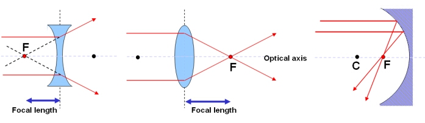
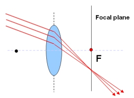
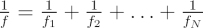

The focal length ( f ) is the distance from a lens or mirror to the focal point ( F ). This is the distance from a lens or mirror at which parallel light rays will meet.

The focal length of (left) a concave lens (with a negative focal length), (middle) a convex lens and
(right) a concave mirror. Note that a lens has a focal point on both sides of the lens axis.
(right) a concave mirror. Note that a lens has a focal point on both sides of the lens axis.

Parallel light rays that are not parallel to the optical axis will meet on the focal plane.
Light rays (of a single frequency) traveling parallel to the optical axis of an optical system will meet at the focal point. Light rays that are parallel to each other, but not to the optical axis, will meet on the focal plane.
For a system of N lenses or mirrors, the effective focal length is given by:
